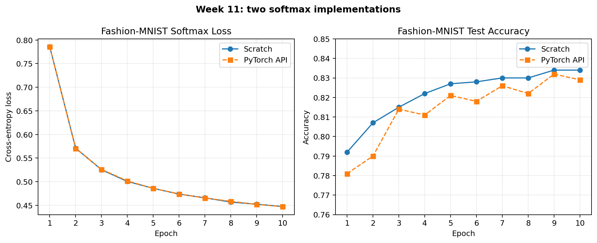

本周学习《动手学深度学习》第3章线性神经网络。我先从零实现线性回归，再用PyTorch高级API写一遍；随后读取Fashion-MNIST，分别完成softmax回归的从零实现和简洁实现。相比只会调用模型，这次重点是理解训练循环里每一步的作用。
这篇复盘主要记录
- 线性回归中的模型、平方损失和SGD分别做什么
- 从零实现与PyTorch简洁实现的对应关系
- softmax怎样把十个分数变成类别概率
- Fashion-MNIST训练结果和仍未解决的问题
一、这一章的两类问题
线性回归回答“有多少”，例如根据面积和房龄估计房价；softmax回归回答“是哪一类”，例如判断一张服装图片是T恤、裤子还是鞋。两者输出不同，但训练主线几乎一样：
读取一小批数据 → 模型给出预测 → 损失衡量差距 → 反向传播计算梯度 → 优化器更新参数。
二、先造一份知道答案的数据
书中先用真实参数w=[2,-3.4]、b=4.2生成1000条人工数据，并加入少量随机噪声。这样训练结束后，可以直接检查模型有没有把原参数找回来。
true_w = torch.tensor([2.0, -3.4])
true_b = 4.2
features = torch.normal(0, 1, (1000, 2))
labels = features @ true_w + true_b
labels += torch.normal(0, 0.01, labels.shape)
labels = labels.reshape((-1, 1))可以把两个特征想成房屋面积和房龄，权重表示这两个因素各自会怎样影响价格，偏置则是模型的基础起点。
三、为什么要小批量读取
训练时不把60000张图片一次塞给模型，也不必每看一张就更新一次。小批量是在计算效率和更新频率之间取一个折中。生活中有点像批作业：一次拿一小摞，批完就根据这一摞发现的问题调整判断，再继续下一摞。
for start in range(0, len(features), batch_size):
batch_indices = torch.tensor(indices[start:start + batch_size])
yield features[batch_indices], labels[batch_indices]四、线性回归从零实现
从零版只使用张量与自动求导。模型负责计算Xw+b，平方损失负责衡量预测与真实值的距离，SGD沿着梯度反方向把参数挪动一小步。
for X, y in data_iter(batch_size, features, labels):
loss = squared_loss(linreg(X, w, b), y)
loss.sum().backward()
sgd([w, b], learning_rate, batch_size)3轮以后，平均损失降到约0.00005，学到的参数为：
真实权重： [ 2.0000, -3.4000]
学到权重： [ 1.9997, -3.3995]
真实偏置： 4.2
学到偏置： 4.1995参数没有一模一样，是因为数据里故意加入了噪声。不过误差已经很小，说明训练循环确实在工作。
五、简洁实现并没有换掉原理
| 从零实现 | PyTorch简洁实现 | 作用 |
|---|---|---|
data_iter | DataLoader | 按小批量读取数据 |
X @ w + b | nn.Linear | 建立线性模型 |
squared_loss | nn.MSELoss | 计算预测误差 |
sgd | torch.optim.SGD | 根据梯度更新参数 |
高级API减少了重复代码，但“预测、损失、反向传播、更新”四个步骤没有改变。从零实现的价值，就是知道这些封装里面大致在做什么。
六、Fashion-MNIST是什么
Fashion-MNIST包含60000张训练图片和10000张测试图片，共10种服装类别。每张图片是28×28的灰度图，所以一批256张图片的形状为：
torch.Size([256, 1, 28, 28])
256：一批图片数量
1：灰度通道数
28、28：图片高度和宽度softmax线性模型会先把每张图片展平成784个像素，再输出10个类别分数。
七、softmax到底做了什么
线性层输出的10个数字可能为负，也不保证总和为1，不能直接当概率。softmax先取指数让结果都为正，再除以同一行的总和：
softmax(X) = exp(X) / sum(exp(X))
可以把它理解成把10个候选类别的“原始支持分”换算成总和为1的支持率。概率最大的类别就是最终预测。
八、交叉熵为什么关注正确类别
如果真实标签是“短靴”，交叉熵主要检查模型给“短靴”的概率。正确类别概率越接近1，损失越小；如果模型很自信地给错，损失会明显增大。
def cross_entropy(probabilities, labels):
true_probabilities = probabilities[range(len(probabilities)), labels]
return -torch.log(true_probabilities)九、两种softmax实现的真实结果

| 实现 | 第10轮损失 | 训练准确率 | 测试准确率 |
|---|---|---|---|
| 从零实现 | 0.4474 | 84.7% | 83.4% |
| PyTorch简洁实现 | 0.4472 | 84.8% | 82.9% |
两次训练的初始参数和数据打乱顺序不完全相同，因此准确率不会逐位一致。它们的损失与准确率走势接近，说明从零版的主要计算逻辑是正确的。
十、与PDF代码不同的地方
- PDF为2021年的版本，本次使用Python 3.9.25、PyTorch 2.8.0和CUDA 12.6。
- 书中很多公共功能来自
d2l包，本次把核心函数直接写出来，便于逐行理解。 - Windows独立脚本把DataLoader的
num_workers设为0，避免多进程重复启动主文件。 - 模型和数据会自动移动到CUDA；没有GPU时仍可回退到CPU。
- 新版
CrossEntropyLoss直接接收原始分数，内部完成数值稳定的log-softmax。 - PyTorch 2.8把带梯度张量转成Python数字前先
detach()，避免运行警告。
十一、目前还不熟的地方
- 数值稳定性。从零版直接计算指数，输入过大时可能上溢，书中也提醒这只是教学实现。
- 交叉熵推导。会写代码，也知道正确类别概率越低损失越大，但从最大似然到交叉熵的公式还需要再推一遍。
- 错误分析。目前只看整体准确率，还没有用混淆矩阵检查衬衫、T恤和套衫等相似类别。
十二、下周计划
- 01多层感知机
理解隐藏层、ReLU和非线性表达能力。
- 02两种实现
分别完成多层感知机的从零实现和PyTorch简洁实现。
- 03模型选择
学习训练误差、泛化误差、过拟合与欠拟合。
- 04正则化
开始权重衰减和dropout实验。
十三、本周最值得保留的认识
模型损失梯度更新评估
模型先给出预测，损失把“错多少”变成一个数字，反向传播计算每个参数应该往哪里改，优化器完成更新，最后用测试集评估效果。线性回归、softmax回归乃至后面更深的网络，都会反复使用这条主线。